🧠 Neurologic Emergencies, Localization & High-Yield Syndromes
Stroke/TIA, seizure, headache, SAH, facial neuropathies, vertigo, neurodegeneration, neuromuscular disease, MS and spinal emergencies.
90 questions
Stroke/TIA Recognition & Acute Pathway
High-yield physician-level review for Day 15 Neurology.
Definition / classic presentation
- Sudden focal neurologic deficit: face/arm weakness, aphasia, visual loss, neglect, ataxia or severe posterior-circulation symptoms.
- Record exact last-known-well (LKW), glucose, NIHSS, BP and anticoagulant/antiplatelet use.
- TIA causes transient focal neurologic dysfunction without acute infarction; treat it as an urgent warning event.
Immediate diagnostics
- Activate stroke pathway; ABCs, IV access, bedside glucose and noncontrast CT head without delaying reperfusion.
- CTA head/neck when large-vessel occlusion is suspected; advanced imaging can select some late/unknown-onset patients.
- Do not wait for routine labs before thrombolysis unless a result is clinically required (e.g., anticoagulant concern).
Reperfusion & first-line management
- 2026 AHA/ASA: eligible disabling ischemic stroke within 4.5 h may receive alteplase or tenecteplase; selected unknown-onset/4.5–9 h patients may qualify using advanced imaging.
- Mechanical thrombectomy is standard for eligible LVO; selected anterior-circulation patients and basilar artery occlusion can benefit up to 24 h depending on criteria.
- Before IV thrombolysis BP must be <185/110 mmHg; avoid unnecessary intensive lowering after reperfusion.
Red flags / traps
- Do not label hypoglycemia, seizure with Todd paralysis, migraine aura or functional symptoms as stroke without assessment.
- For non-disabling minor stroke, thrombolysis may not help; short-course dual antiplatelet therapy is commonly preferred when appropriate.
- TIA still needs urgent vascular/cardiac cause evaluation and secondary prevention.
🧠 Acute Stroke / TIA Algorithm
Click to open/close.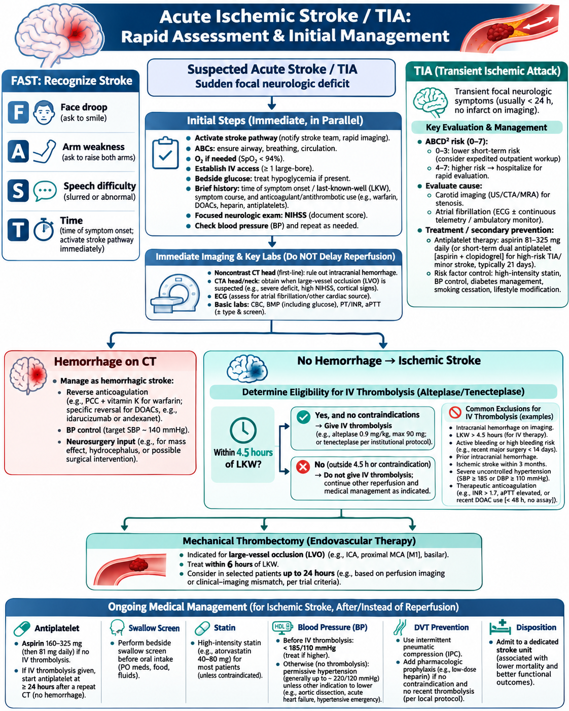
Seizure & Status Epilepticus
High-yield physician-level review for Day 15 Neurology.
Definition / first minutes
- Status epilepticus: seizure lasting ≥5 min or recurrent seizures without return to baseline.
- Protect airway, position safely, oxygen as needed, monitor ECG/BP/SpO₂, establish IV access and check bedside glucose.
- Treat hypoglycemia immediately; consider thiamine before/with glucose in patients at risk of deficiency.
First-line treatment
- Prompt benzodiazepine: IV lorazepam 0.1 mg/kg (max 4 mg, may repeat once) or IM midazolam when IV access is unavailable.
- Do not under-dose benzodiazepines because of fear of respiratory depression; ongoing seizure itself is dangerous.
Second-line / refractory
- If seizure continues, use an IV antiseizure drug such as levetiracetam, fosphenytoin/phenytoin or valproate.
- Refractory status requires ICU care, airway control as needed, continuous anesthetic infusion and continuous EEG.
- Search for causes: electrolytes, infection, stroke, trauma, toxins/withdrawal, missed antiseizure medication, pregnancy/eclampsia.
First unprovoked seizure
- Confirm true seizure, identify provoking factors and perform focused neurologic exam.
- MRI brain is preferred for most adults after a first unprovoked seizure; CT is used when urgent structural evaluation is needed.
- EEG helps classify epilepsy and estimate recurrence risk; driving advice follows local regulations.
🧠 Status Epilepticus & First Seizure
Click to open/close.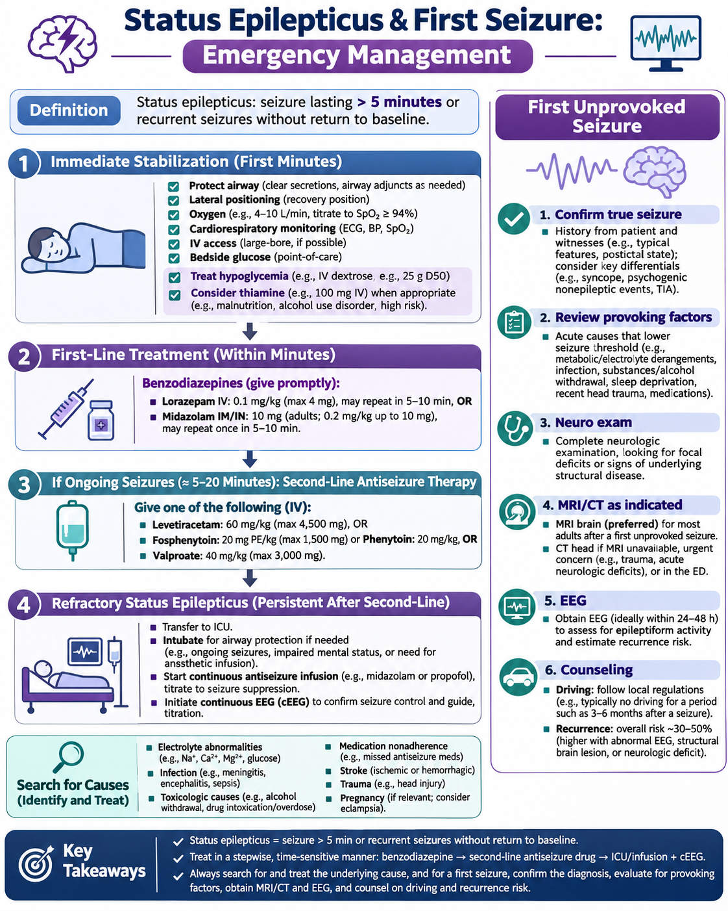
Headache Red Flags; Migraine / Tension / Cluster
High-yield physician-level review for Day 15 Neurology.
Red flags for secondary headache
- Thunderclap onset, meningism/fever, focal deficit, altered consciousness, papilledema, pregnancy/postpartum, cancer/immunosuppression, age >50 with new headache, trauma or exertional/positional pattern.
- A new headache with red flags is a diagnostic problem, not a “migraine until proven otherwise.”
Primary headache patterns
- Migraine: typically 4–72 h, moderate–severe, often unilateral/pulsatile with nausea and/or photophobia/phonophobia.
- Tension-type: bilateral pressure/tightness, mild–moderate, not aggravated by routine activity.
- Cluster: excruciating unilateral orbital/temporal pain lasting 15–180 min with ipsilateral autonomic signs and restlessness.
Treatment basics
- Migraine: NSAID/acetaminophen for mild attacks; triptan or other migraine-specific therapy when appropriate; add antiemetic if needed.
- Cluster: high-flow oxygen plus a rapid triptan (e.g., subcutaneous or intranasal).
- Avoid opioids; address medication-overuse headache by withdrawing the overused acute medication and establishing prevention.
Common traps
- Do not perform routine neuroimaging for a stable typical primary headache with normal neurologic exam and no red flags.
- Atypical aura, new focal deficit, papilledema, thunderclap onset or systemic illness changes the pathway.
🧠 Acute Headache Red Flags
Click to open/close.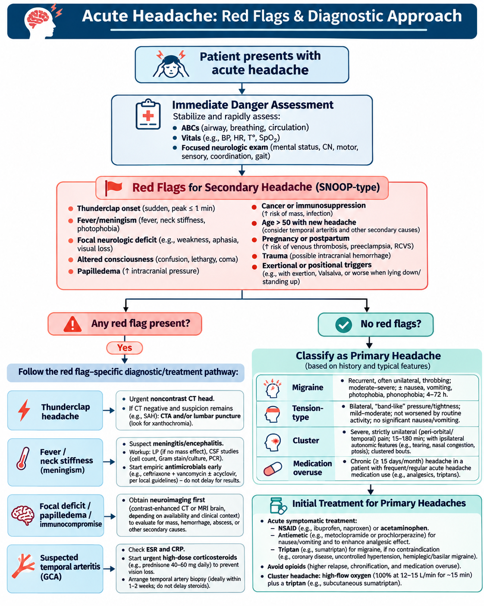
🧠 Primary Headache Comparison
Click to open/close.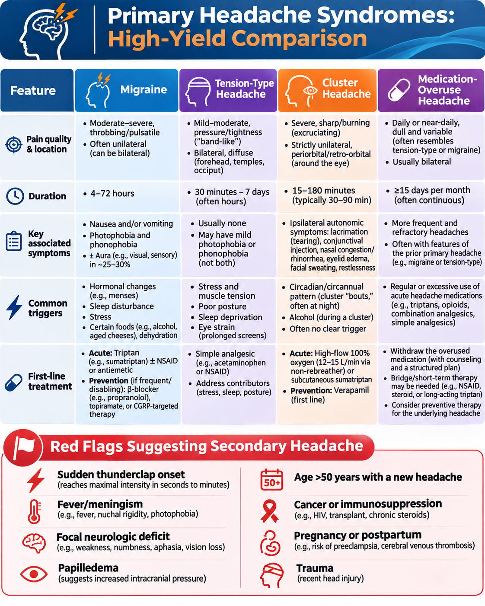
Subarachnoid Hemorrhage
High-yield physician-level review for Day 15 Neurology.
Classic presentation
- Sudden “worst headache of life” reaching maximal intensity rapidly; may include vomiting, meningismus, photophobia, LOC or focal deficit.
- Exertional/Valsalva onset increases suspicion.
Diagnosis
- Urgent noncontrast CT head is first-line.
- If CT is negative but clinical suspicion remains high, proceed with CTA and/or lumbar puncture depending on timing and local pathway.
- Once SAH is confirmed, obtain vascular imaging to identify aneurysm and involve neurovascular/neurosurgery urgently.
Management
- Secure the ruptured aneurysm early, preferably within 24 h when feasible.
- Start enteral nimodipine early to reduce delayed cerebral ischemia risk; monitor for hydrocephalus and vasospasm/DCI.
- Avoid marked BP variability; treat seizures when they occur. Routine prophylactic antiseizure therapy is not for everyone.
Emergency pearl
- A normal initial CT does not automatically exclude SAH when timing or clinical suspicion is unfavorable.
- Do not delay neurovascular consultation in confirmed or strongly suspected aneurysmal SAH.
🧠 Subarachnoid Hemorrhage Emergency Algorithm
Click to open/close.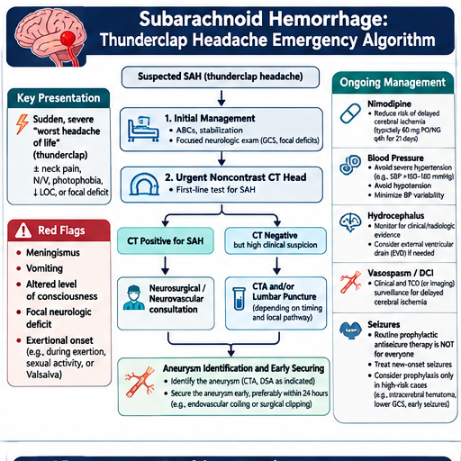
Bell Palsy & Trigeminal Neuralgia
High-yield physician-level review for Day 15 Neurology.
Bell palsy
- Acute unilateral peripheral CN VII weakness involving forehead and lower face.
- No other focal neurologic deficits in a typical case. Eye closure may be impaired.
- Start oral corticosteroids early, ideally within 72 h; protect the cornea with lubrication/eye closure measures.
Trigeminal neuralgia
- Brief recurrent electric-shock facial pain in one or more trigeminal divisions, triggered by touch, chewing, talking or brushing teeth.
- Neurologic exam is usually normal between attacks.
- Carbamazepine or oxcarbazepine is first-line pharmacologic therapy.
When to image / refer
- Forehead sparing suggests central facial weakness (e.g., stroke), not Bell palsy.
- MRI/specialist evaluation for atypical pain, sensory loss, bilateral symptoms, young age, progressive course or concern for tumor/MS/vascular compression.
Common traps
- Antiviral monotherapy is not standard treatment for Bell palsy; if used, it is generally added to steroids in selected cases.
- Do not call recurrent brief electric facial pain “Bell palsy.”
🧠 Bell Palsy vs Trigeminal Neuralgia
Click to open/close.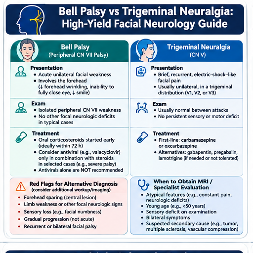
Peripheral vs Central Vertigo
High-yield physician-level review for Day 15 Neurology.
Classify by timing & triggers
- Acute vestibular syndrome: persistent vertigo/dizziness for days with nystagmus, nausea/vomiting and gait imbalance.
- Triggered episodic vestibular syndrome: brief episodes provoked by position change, typical for BPPV.
- Spontaneous episodic syndrome: recurrent episodes without a fixed trigger (e.g., vestibular migraine, Ménière disease).
Bedside approach
- Dix–Hallpike tests posterior-canal BPPV; a positive test can be treated with the Epley maneuver.
- HINTS is for trained clinicians evaluating continuous acute vestibular syndrome with spontaneous nystagmus; it is not a general “dizzy patient” test.
Central danger clues
- Severe gait/truncal ataxia, focal neurologic deficits, direction-changing or vertical nystagmus, skew deviation, new hearing asymmetry or strong vascular risk profile.
- Central/equivocal findings → urgent MRI/MRA or stroke pathway as appropriate.
Trap
- A normal head CT has low sensitivity for posterior fossa ischemia and should not reassure you when central vertigo is suspected.
🧠 Peripheral vs Central Vertigo
Click to open/close.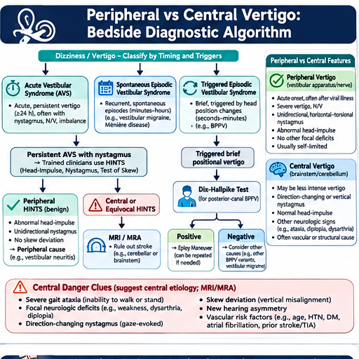
Parkinson Disease & Dementia
High-yield physician-level review for Day 15 Neurology.
Parkinson disease recognition
- Core diagnosis requires bradykinesia plus rest tremor and/or rigidity; asymmetry, shuffling gait and reduced arm swing are common.
- Nonmotor features may precede motor signs: anosmia, constipation, REM sleep behavior disorder, depression/anxiety and autonomic symptoms.
Parkinson management
- Diagnosis is primarily clinical. Consider dopamine-transporter imaging only when diagnostic uncertainty remains.
- Levodopa/carbidopa is the most effective symptomatic therapy when motor symptoms affect function or quality of life; treatment is individualized.
- Atypical red flags include early falls, severe early autonomic failure, supranuclear gaze palsy, cerebellar signs or poor levodopa response.
Dementia patterns
- Alzheimer: insidious progressive episodic-memory impairment. Vascular: stepwise/fluctuating decline with vascular disease.
- Lewy body dementia: cognitive fluctuations, recurrent visual hallucinations, REM sleep behavior disorder and parkinsonism.
- Frontotemporal dementia: earlier behavioral/personality or language change with relatively preserved memory early.
Cognitive workup
- Medication review, depression screen, B12, TSH, CBC/CMP and neuroimaging when indicated.
- Urgent evaluation for delirium, rapid decline, focal deficits, gait disorder or suspected normal-pressure hydrocephalus.
🧠 Parkinson Disease
Click to open/close.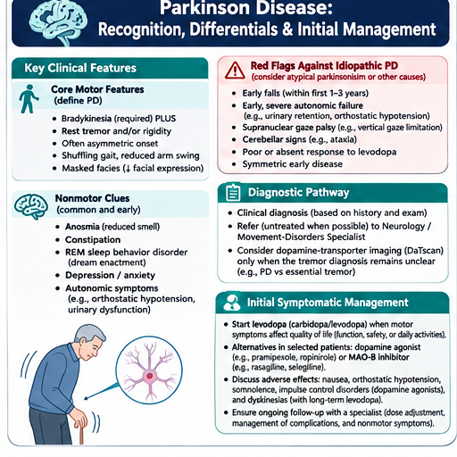
🧠 Dementia Syndromes
Click to open/close.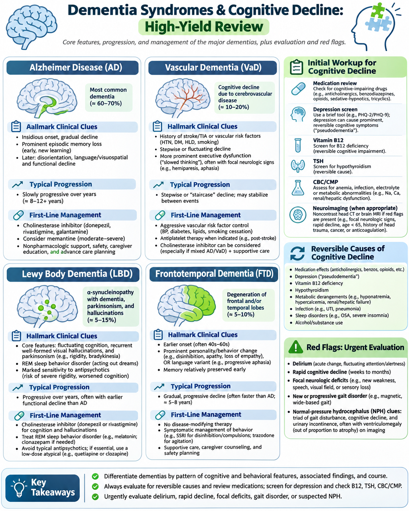
Guillain–Barré, Myasthenia Gravis & MS Basics
High-yield physician-level review for Day 15 Neurology.
Guillain–Barré syndrome
- Acute/subacute progressive symmetric weakness with reduced/absent reflexes; paresthesias, pain, cranial nerve involvement and dysautonomia can occur.
- Monitor respiratory function and autonomic instability; CSF may show albuminocytologic dissociation and NCS may support diagnosis.
- Treat significant GBS with IVIG or plasma exchange; corticosteroids are not effective.
Myasthenia gravis
- Fluctuating fatigable weakness, often ptosis/diplopia and bulbar symptoms, with preserved sensation and usually normal reflexes.
- Confirm with AChR/MuSK antibodies and electrodiagnostic testing as needed.
- Myasthenic crisis: monitor vital capacity/NIF, secure airway when needed and treat with IVIG or plasma exchange; identify triggers.
Multiple sclerosis basics
- Typical syndromes include optic neuritis, sensory symptoms, internuclear ophthalmoplegia, myelitis, focal weakness and ataxia.
- 2024 McDonald revisions (published 2025) retain MRI as central and expand diagnostic support, including optic nerve as a fifth topography and CSF biomarkers such as oligoclonal bands/kappa free light chains.
- Diagnosis requires a compatible clinical/MRI pattern and exclusion of mimics; do not diagnose MS from nonspecific white-matter lesions alone.
Emergency pearl
- Respiratory decline, weak cough or severe bulbar dysfunction in GBS/MG requires ICU-level monitoring and early airway planning.
🧠 Myasthenia Gravis vs Guillain–Barré
Click to open/close.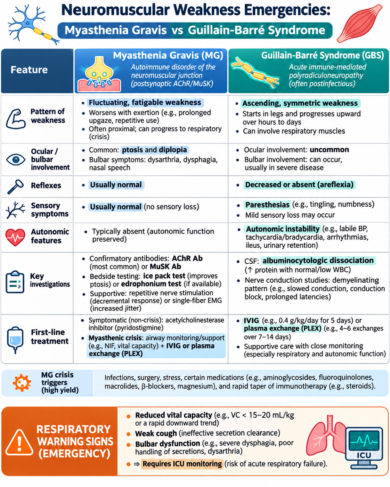
🧠 Multiple Sclerosis
Click to open/close.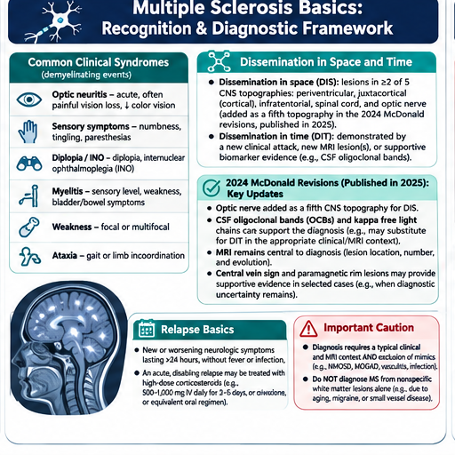
Cauda Equina / Spinal Cord Compression Red Flags
High-yield physician-level review for Day 15 Neurology.
Red flags
- Severe/progressive back pain, bilateral sciatica, saddle anesthesia, new urinary retention/overflow incontinence, bowel dysfunction, sexual dysfunction or progressive bilateral leg weakness.
- Upper motor neuron signs or a sensory level suggest cord compression rather than isolated cauda equina.
- History of cancer, infection risk or immunosuppression increases urgency.
Emergency evaluation
- Perform focused neurologic exam including motor, sensory, reflexes, perineal/saddle sensation and bladder assessment when appropriate.
- Obtain urgent MRI of the relevant spine (or broader imaging when lesion level is uncertain) and obtain emergency spinal/neurosurgical consultation.
Metastatic spinal cord compression
- If malignancy is suspected with neurologic signs, urgent MRI and oncology/spine pathway are required; immobilize if instability is suspected.
- Corticosteroids may be used according to local oncology protocol; definitive treatment may be surgery and/or radiotherapy depending on the case.
Do not miss
- Do not delay imaging for routine outpatient management when cauda equina or spinal cord compression is suspected.
🧠 Cauda Equina & Spinal Cord Compression
Click to open/close.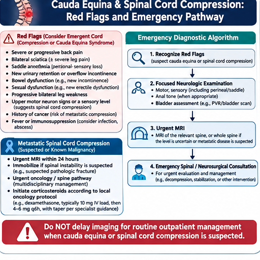
✅ Finish Day 15
When you finish the notes, visuals and questions, mark the day complete.